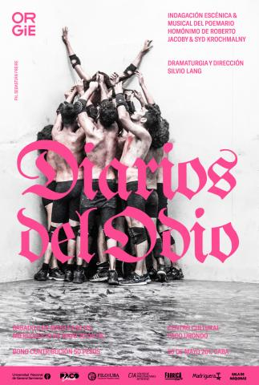

Artículo
El Centro Cultural "Paco Urondo" invita al estreno de Diarios del odio, una indagación escénica y musical del poemario homónimo de Roberto Jacoby y Syd Krochmalny, dirigida por Silvio Lang, junto a ORGIE (Organización Grupal de Investigaciones Escénicas) .
Dos planos escénicos heterogéneos se enfrentan en la indagación sobre el poemario Diarios del odio, de Roberto Jacoby y Syd Krochmalny: las relaciones de los cuerpos en masa y los enunciados del odio de los lectores anónimos de las ediciones digitales de La Nación y Clarín, durante los gobiernos kirchneristas.
Luego de cada función se llevarán a cabo los Coloquios “Lenguaje y violencia”, con la participación del público presente. sábado 6 de mayo: Américo Cristófalo, María Pía López, Roberto Jacoby y Syd Krochmalny, Silvio Lang, ORGIE. miércoles 10 de mayo: Américo Cristófalo, Ricardo Manetti, Horacio González, Roberto Jacoby y Syd Krochmalny, Silvio Lang, ORGIE.
En el primer plano los cuerpos se organizan en la materialidad de fenómenos de masas en movimiento en el espacio público –marchas, piquetes, saqueos, estampidas, linchamientos, represiones policiales, formaciones militares, éxodos, rituales. En el otro plano, los enunciados vueltos poemas se resuelven en canciones pop evangelista. En las tensiones y transacciones entre uno y otro plano se juegan los afectos de odio y de dicha de los cuerpos, tanto como la estrategia de poder del pastoreo de las masas ante sus desbordes contingentes de igualdad, organización y emancipación.
Sinopsis
"A los eslabones de la serie de traducciones –obra visual / poemario- se le agrega ahora una performance teatral, encarada por Silvio Lang y un conjunto de actores y músicos. Traducir al cuerpo, en los cuerpos, por los cuerpos. Individuales y colectivo. Ver qué hace el odio en ellos y el combate grupal contra el odio. Lo comunitario que embate para evitar su propia destrucción. Siempre en esta secuencia de traducciones se estuvo pensando la política y las pasiones. Las pasiones que atraviesan, fundan y desgarran. La política como modo de hacer con las pasiones. Agitándolas, absorbiéndolas, conjurándolas. Lang, según adelanta, piensa en ese vaivén."
Sobre “Diarios del odio” en la universidad pública

"Lo que le queda al arte, a la política, a la ética es la exigencia de convertir la guerra en una danza, convertir el cuerpo en un gesto, ejercer en medio de la violencia una com-posición de cuerpos ex-puestos, es decir, lo que queda en medio de la estética de la violencia, lo que todavía nos queda es abrir imágenes —y así, imaginaciones. Y entonces, si la estética es el modo en que la violencia se impone, la imagen gestual será el modo en que ella se depone y expone, el modo en que se vuelve amable. Solo así podrá pensarse un cuidado de los cuerpos, un momento en que decimos “PAREMOS”, nos estamos matando, necesitamos cuidarnos, necesitamos componer algo que no sea puro golpe y patada, pura o-posición. En eso se precisa, a nuestro entender, la potencia de ORGIE: en haberse percatado que debían cuidarse, en haberse implicado en convertir los golpes y las patadas en gestos, en exposiciones de cuerpos, en imágenes".